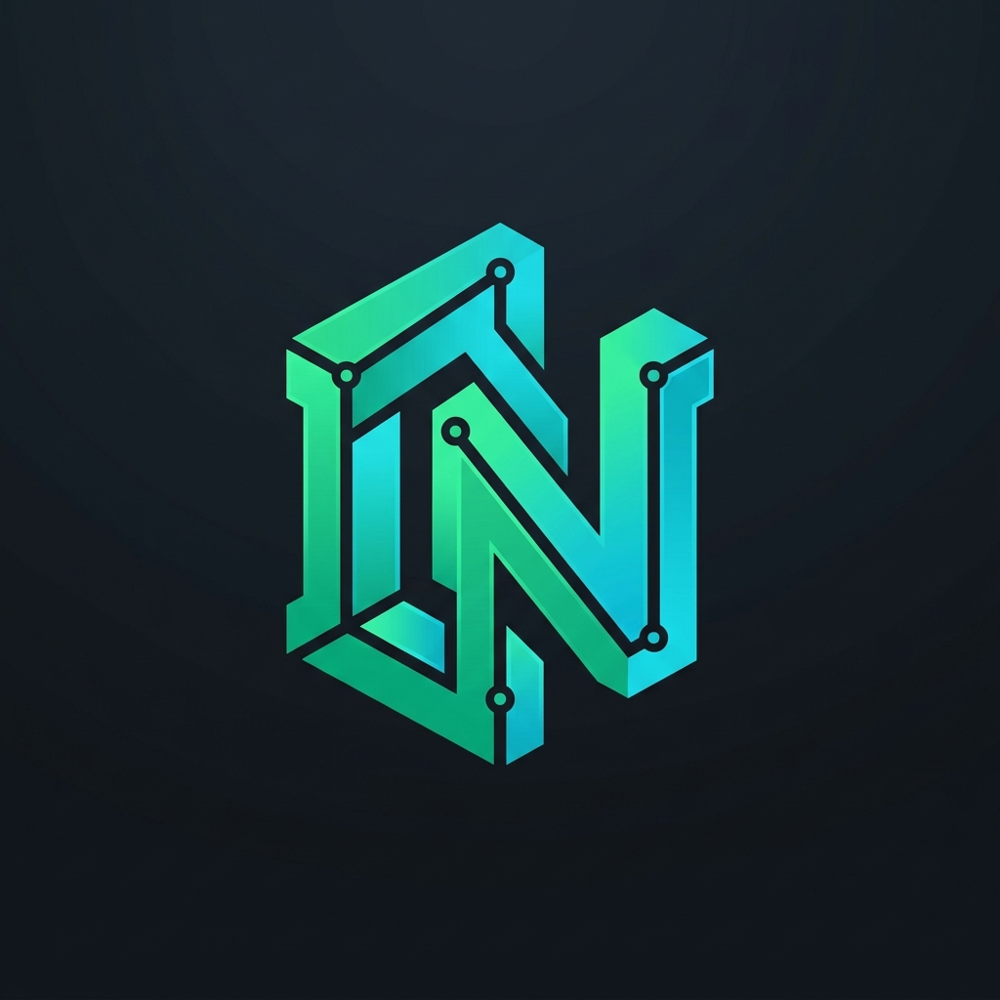

Indinopy es un sistema de gestión industrial de código abierto (ERP/MES) diseñado para la manufactura textil y de calzado: control de planta (MRP), stock por partida doble, contabilidad y auditoría criptográfica. Sirve además como motor tecnológico de referencia para las propuestas del Proyecto FIMCA y el Anteproyecto de Ley de e-OP.

Especificaciones de ingeniería de software del ERP/MES Indinopy, junto con los anteproyectos legislativos y el marco teórico del ecosistema FIMCA.
Propuesta legislativa de la Orden de Producción Electrónica como título ejecutivo, Bonos BIP, separación concursal de insumos, Póliza de Stock, CDD/FAEL y Monotributo Productivo.
Propuesta de marco político-industrial en 3 cuerpos autónomos: Anteproyecto e-OP, Régimen Sectorial FIMCA y Pacto Fiscal Productivo, con minutas regulatorias y análisis de impacto.
Modelización matemática del protocolo: consenso Proof-of-Productive-Work, Timelocks, solvencia del FDI, gobernanza policéntrica de Ostrom y equilibrio de Nash.
Instrumento legal-financiero homologado con firmas Ed25519, árbol de Merkle BOM, cronograma de Escrow (35/45/20) y desglose factorial ítem por ítem en UCI.
Texto antecedente de la ley de emergencia productiva (tarifaria, impositiva y de suspensión de ejecuciones) que dio origen a la arquitectura sectorial de FIMCA.
Topología de red federada DNS (.ar), actores del sistema, primitivas criptográficas, máquina de estados de la e-OP y flujos core de negocio.
Diccionario taxonómico completo: Escrow, RCF, SETP, Bonos BIP, CDD/FAEL, Merkle Root, PTF, Póliza de Stock y encuadre CCyC 1251/1356.
Diagnóstico de la informalidad manufacturera, los 5 dispositivos territoriales (CIFO, PFET, Banco de Maquinarias) y modelos de despliegue SaaS / On-Premise.
Matriz de correspondencia entre el Anteproyecto e-OP / FIMCA y los módulos de Django: desacople fiduciario, remitos con separación concursal y contabilidad.
Estado actual del código en Django 5, contratos JSON de la API federada, política de costos congelados en UCI y hoja de ruta de desarrollo.
Estructura paritaria de las 7 sillas en los Comités del FDI, peritaje vinculante INTI (5 días), Tribunal Arbitral (72h) y Boletín Oficial Sectorial.
Diagramas de secuencia: Compras (3-Way Matching), Producción/Fasón con custodia, Ventas Omnicanal, Nómina (LSD ARCA con SoD) y Tesorería/FDI.
Segregación de funciones (SoD) por capa: Nodos de la Red Federada, perfiles internos del ERP de la Marca, Talleres y Comités del FDI, más Modo Headless.
Proclama fundacional del trabajo real, el Decálogo Productivo de la Comunidad Organizada, las universidades públicas y el software libre en el taller.